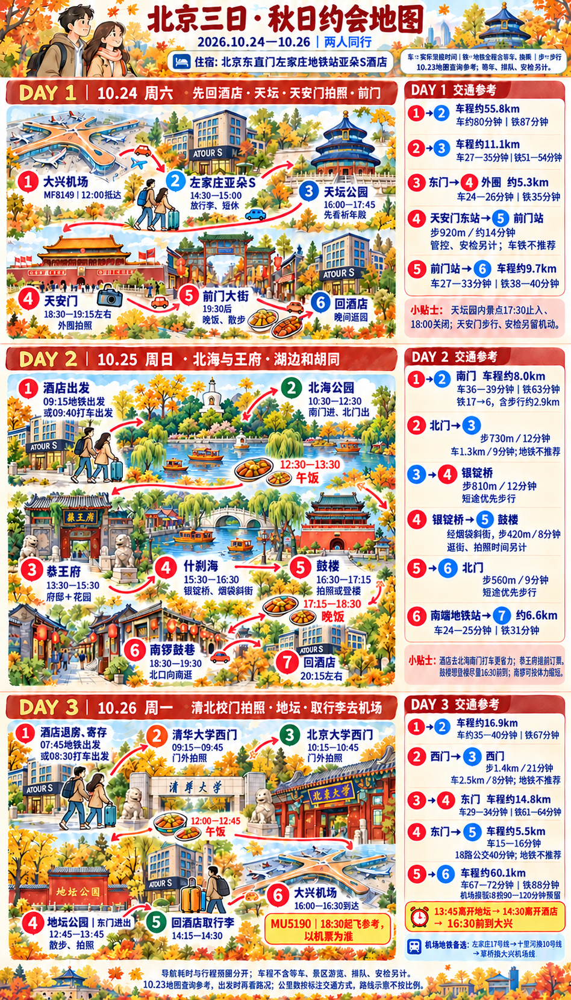
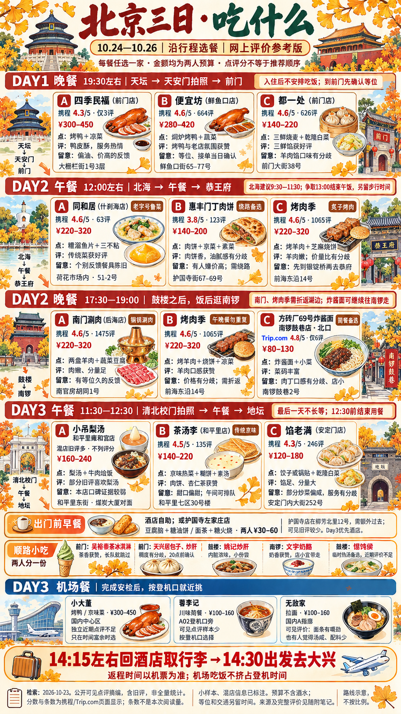

旅行不用来回翻聊天
今天，去哪儿？
交通口径
车＝地图驾驶耗时；铁＝全程含步行、候车、换乘。10/23核验参考，等车、景点排队和安检另计。
路况、雨势和体力会改变节奏。当天导航优先，返程时间留足。
每餐挑一家就好
北京，吃点特色。
优先特色正餐；每顿留三个方案。点“这顿选它”可记在手机上，不代表预约或下单。
这些网上评价怎么看？
预算为两人合计预留，不含酒水，不是店方套餐报价。评分来自携程/Trip.com页面，页上条数不等于本次读取数；不按评分机械排序。
早餐、小吃和机场餐
小吃两人分着尝，给正餐留胃口。机场先完成安检，再按登机口挑。
临出门看一眼
随身备忘。
北京天气
长袖＋可脱的保暖中层＋防风外套，舒适防滑鞋。雨天带折叠伞；夜间最低温不代表白天游览温度。
页面联网时尝试刷新，失败会保留注明时间的已知预报。
中国天气网10/23查询摘录
10/24 多云转小雨，11–17℃；10/25 小雨，10–13℃；10/26 多云转晴，1–18℃。不同预报源存在差异，夜间最低温尤其明显，临出门再查看原站；此摘录不会自动刷新。
回到酒店
北京东直门左家庄地铁站
亚朵S酒店
北京市朝阳区香河园路左家庄15号
附近地铁：17号线左家庄站。导航时核对完整店名。
航班与取行李
10月24日 抵京MF814912:00 到达大兴
10月26日 返程MU5190起飞时间请核对机票
当前计划：13:45离开地坛 → 14:15回酒店 → 14:30出发 → 16:00–16:30到大兴。
此安排按此前18:30参考起飞时间倒排，尚未获得机票确认。若订单更早，请把下午安排整体前移，必要时取消地坛。
出门清单
两张攻略图，随手存好
长图可点开放大。路线图保留此前版本；第二天提早到9:30逛北海、最新餐次时间，以网页时间线为准。




资料与来源
行程按截至10/23的已确认安排整理。交通为百度地图当日查询；公开餐厅评论含旧评，不能代表当天营业、出品或排队。
图像为AI绘制的示意图，路线不按比例；网页文字优先。
手机怎么留着看
在手机浏览器打开本网址，收藏或添加到主屏幕即可。网页首次联网打开后，会尝试保存文字和已浏览图片供离线查看。
离线资料准备中；地图、原始评价和天气刷新仍需联网。